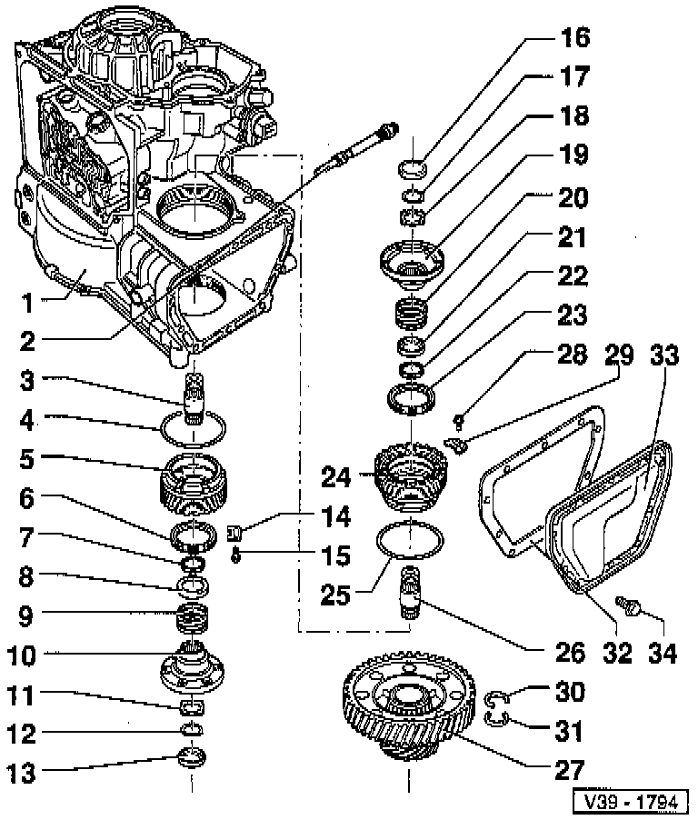
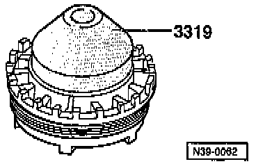
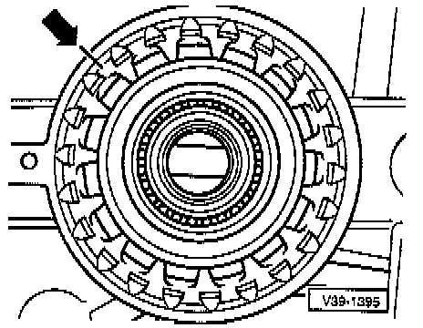
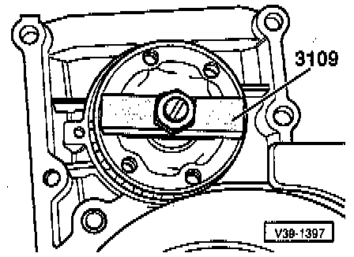
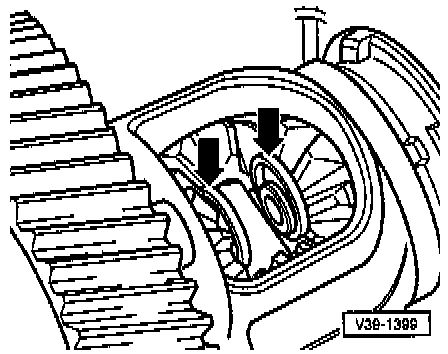
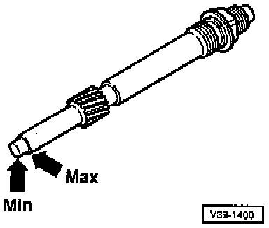

Removing/Installing

COMPONENT NOTES AND INFORMATION
NOTE:
^ If tapered roller bearings are to be re-used, mark the adjusting ring, refer to Fig. 2, below.
^ The cave pinion does not need to be removed for removing and installing the differential.
1 Transmission housing
2 Speedometer drive
- With marking for oil level indication, refer to Fig. 7, below.
3 Output shaft/drive flange
- Install thread facing drive flange
- Remove before taking out differential
- First adjust differential before installing
4 O-ring
- Always replace
5 Adjusting ring
- Removing, refer to Fig. 3, below.
- If used bearings are re-installed, mark installation position and line up bearings on marking again when installing, refer to Fig. 2, below.
- If new bearings are installed, pay attention to setting instructions, refer to Differential. Adjustments
6 Oil seal for drive flange
- Before installing, pack space between sealing lips with multi-purpose grease
- Can be replaced with transmission installed, refer to Replacement. Service and Repair
- Remove with VW 681
- Driving in, refer to Fig. 1, below.
7 Tapered ring
- Shoulder faces thrust washer
8 Thrust washer
- Place over compression spring
9 Compression spring
10 Drive flange
- Install with tapered ring, thrust washer and compression spring
- Remove before taking out inner circlip on bevel gear
- Removing and installing, refer to Fig. 4, below.
11 Dished washer
12 Circlip
13 Cover
14 Locking element
15 Screw
- Tighten to: 12 Nm (9 ft lb)
16 Cover
17 Circlip
18 Dished washer
19 Drive flange
- Install with tapered ring, thrust washer and compression spring
- Remove before taking out inner circlip on bevel gear
- Removing and installing Fig. 4, below.
20 Compression spring
21 Thrust washer
- Place over compression spring
22 Tapered ring
- Shoulder faces thrust washer
23 Oil seal for drive flange
- Before installing, pack space between sealing lips with multi-purpose grease
- Can be replaced with transmission installed
- Page 39-2
- Remove with VW 681
- Driving in, refer to Fig. 1, below.
24 Bearing body
- Tighten to: 150 Nm (111 ft lb)
- When installing new bearing, pay attention to setting instructions, refer to Adjusting differential, Page 39-50
- Remove with 3155
- Installing, refer to Fig. 5, below.
25 O-ring
- Always replace
26 Output shaft/drive flange
- Install thread facing drive flange
- Before removing, take out differential
- First adjust differential before installing
27 Differential
- Disassembling and assembling, refer to Page 39-33
- Before removing differential, take out bearing body, adjusting ring and output shafts
28 Screw
- Tighten to; 12 Nm (9 ft lb)
29 Locking element
30 Circlip
- First remove drive flange before removing circlip
- Removing and installing Fig. 6, below.
31 Circlip
- First remove drive flange before removing circlip
- Removing and installing Fig. 6, below.
32 Seal
- Always replace
33 Cover
- For differential
34 Screw
- Tighten to: 28 Nm (21 ft lb)
- Install with suitable thread locking fluid
NOTE: After adjusting tapered roller bearings, secure bearing body and adjusting nut.

Fig. 1 Drive flange oil seal, driving in up to stop

Fig. 2 Adjusting ring, marking
- If used bearings are re-installed, mark installation position (arrow) and line up on marking when installing.

Fig. 3 Adjusting ring, removing

Fig. 4 Drive flange, removing and installing
NOTE: Drive flange can also be removed with VW 391.

Fig. 5 Differential, installing
- Screw in bearing body up to stop and tighten to 150 Nm (111 ft lb)

Fig. 6 Circlip [arrow), installing
- Remove circlip with two screwdrivers.

Fig. 7 Speedometer drive
- With transmission installed, check gear oil in final drive, refer to Check Oil Level.